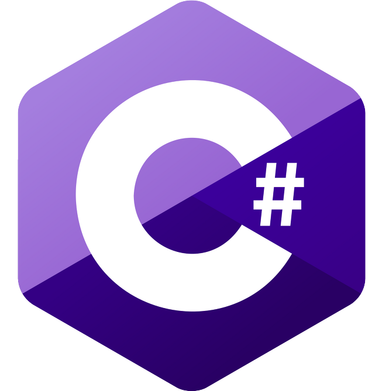
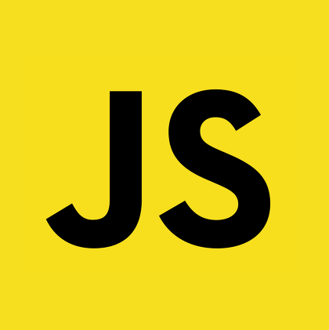
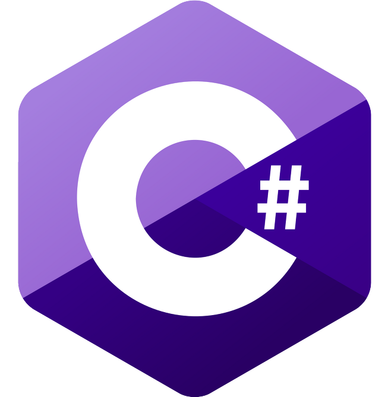
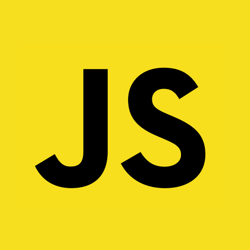
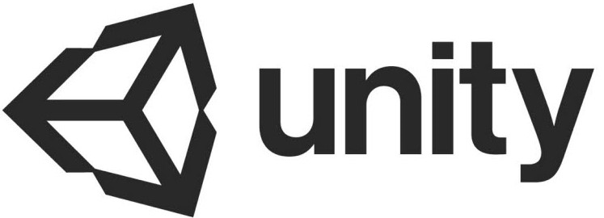
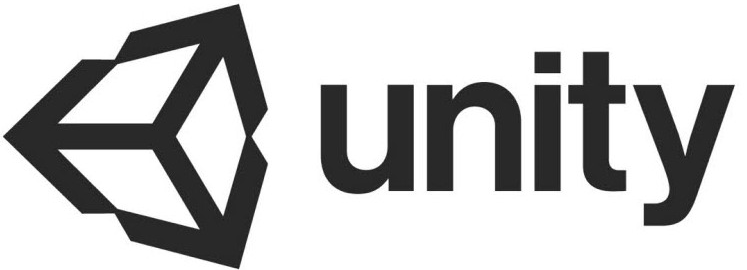

About me.
Skills.
 




 

My Goal.
My SNS.
Lee In-Ho [Daniel]
#1995.02.20
#컴공
#ISFP
#서울
백엔드 개발자가 되기위해 오늘도 달리고 있는 서울에서 생존신고중인 이인호입니다!
제가 생각하는 제 장점은 상대방의 의견을 먼저 들어보고 그 다음 제 행동을 하는 부분이라 생각합니다.
물론 그러다보니 상대가 막무가내로 계속해서 의견을 내는 상황에 태클을 잘 못거는 단점이 있지만 이런 부분만 잘 조율한다면 큰 장점으로 만들어 나갈수 있다고 생각합니다
그리고 제 두번째 장점은 어떤일이든 한번 몰입하면 시간가는 줄 모르고 해나가는 부분이라 생각합니다 대신 쓸데없는 일에도 한번 꽂히면 정신을 못차린다는 부분이 있지만요 ㅎㅎ;
물론 그러다보니 상대가 막무가내로 계속해서 의견을 내는 상황에 태클을 잘 못거는 단점이 있지만 이런 부분만 잘 조율한다면 큰 장점으로 만들어 나갈수 있다고 생각합니다
그리고 제 두번째 장점은 어떤일이든 한번 몰입하면 시간가는 줄 모르고 해나가는 부분이라 생각합니다 대신 쓸데없는 일에도 한번 꽂히면 정신을 못차린다는 부분이 있지만요 ㅎㅎ;
Team Style
제 협업 스타일은 어시스트 스타일 입니다
업무 분담 전 다양한 의견이 나왔을 때 먼저 이야기를 들어주고 다양한 아이디어중 보완할 부분이 떠오르면 조언을 해주어 다른 팀원의 의견이 완성도 높아질수 있도록 해주는 편입니다
업무분담 후에는 제 업무를 묵묵히 해가는 편입니다
업무 분담 전 다양한 의견이 나왔을 때 먼저 이야기를 들어주고 다양한 아이디어중 보완할 부분이 떠오르면 조언을 해주어 다른 팀원의 의견이 완성도 높아질수 있도록 해주는 편입니다
업무분담 후에는 제 업무를 묵묵히 해가는 편입니다
제 최종 목표는 다양한 기술스택을 탄탄하게 쌓아 지인들과 함꼐 저만의 프로젝트를 진행해 보는 것입니다
꼭 큰 회사가 아니더라도 입사하여 다양한 상황속에서 경험을 쌓고 경력을 쌓아 대기업에 이직하여 대기업에서만 할수 있는 경험을 하고 그렇게 실력을 쌓아나가 저 스스로 개발자로서 독립하는 것이 제 목표입니다
그러기 위해 지금부터 기초를 다져 하나하나 제 실력을 키워나가겠습니다
꼭 큰 회사가 아니더라도 입사하여 다양한 상황속에서 경험을 쌓고 경력을 쌓아 대기업에 이직하여 대기업에서만 할수 있는 경험을 하고 그렇게 실력을 쌓아나가 저 스스로 개발자로서 독립하는 것이 제 목표입니다
그러기 위해 지금부터 기초를 다져 하나하나 제 실력을 키워나가겠습니다